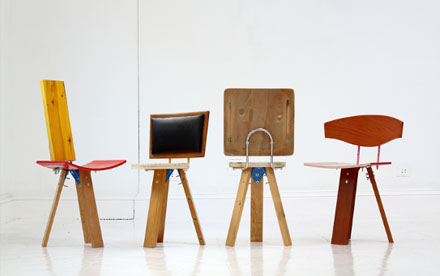
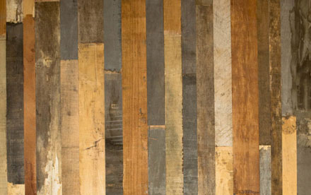
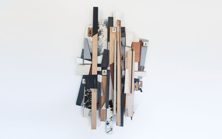
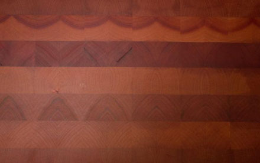
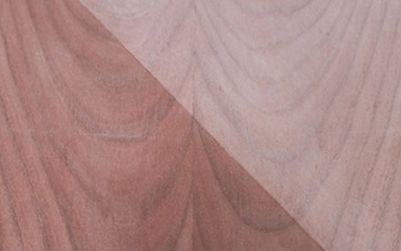
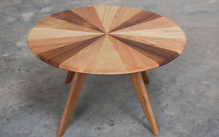
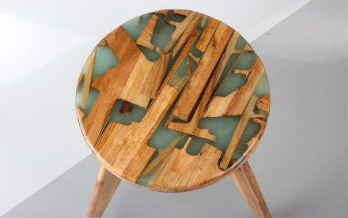
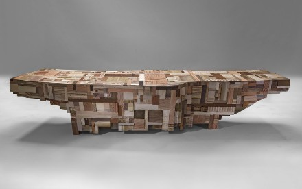

Catalina Larenas Said
Intro
Antecedentes
Estado del arte
Propuestas y Prototipos
Resultados y conclusiones








Referencias
Upcycling Wood: transformando materiales desechados en objetos útiles y valiosos
Reutilización de sobrantes de madera nativa para crear paneles de revestimiento
Reutilización de la madera: transformando piezas descartadas en objetos de arte
Woodnic, Hecho a mano en La Araucanía, con madera de origen sostenible
Folimag,valor a las maderas nativas y exóticas existentes en el sur de Chile.
Tronco noble,maderas nativas (endémicas) e introducidas
Técnicas para unir piezas de madera
Materiom, tratamientos de aglutinado de distintos materiales con madera
El aserrín como material expresivo en el diseño interior
Restos desechados transformados en taburetes de madera y resina "Zero Per Stool", Hattern
Muebles de arte con residuos de maderas de Terry Holzgreen
Información regional de plantaciones forestales en la región de la araucanía
{kind=link}
{kind=link}
{kind=link}
{kind=link}
{kind=link}
{kind=link}
{kind=link}
{kind=link}